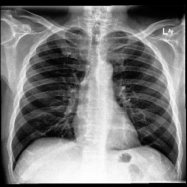

Assistant Radiologue Virtuel

Conclusion
Actélectasie basale gauche probable
Confiance
82 %
Points clés
- perte de volume basale gauche
- Rétraction des structures
- Opacité linéaire basale
Recommandations
- Corrélation clinique
- Contrôle radiologique